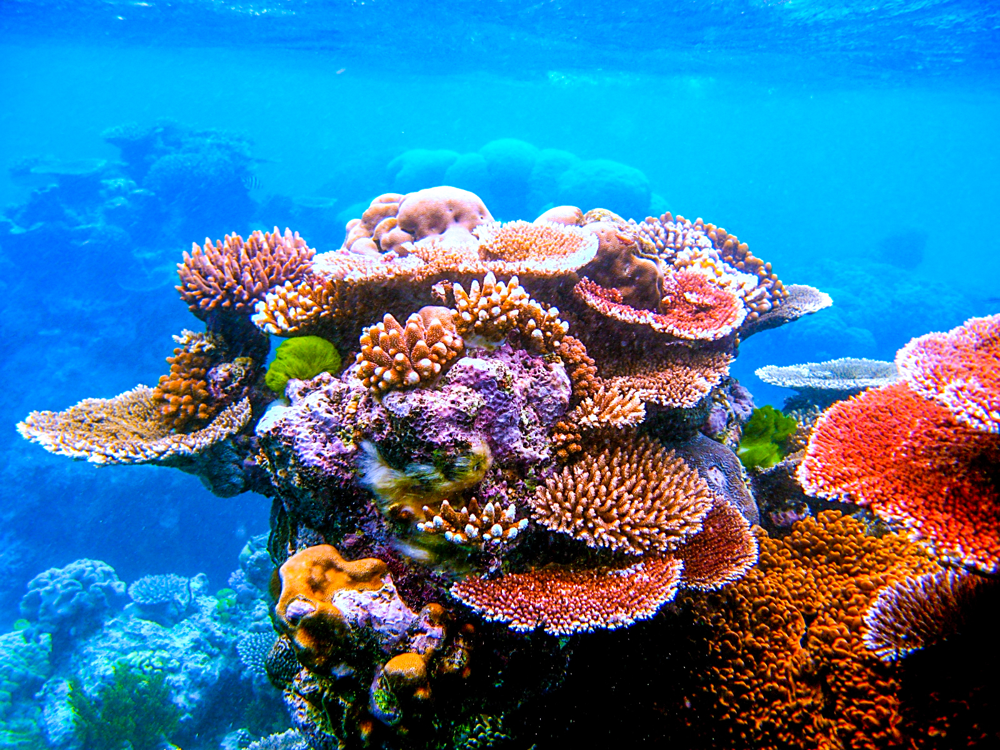
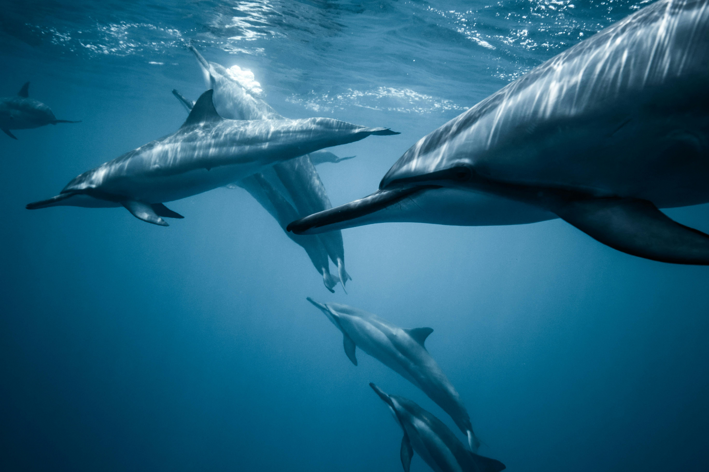
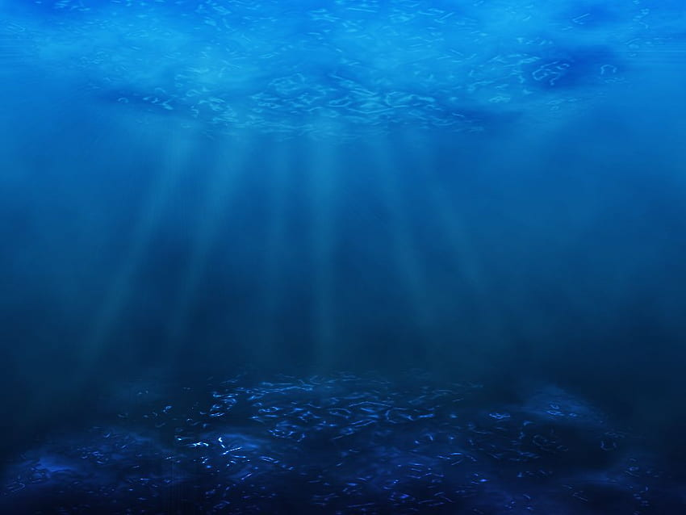
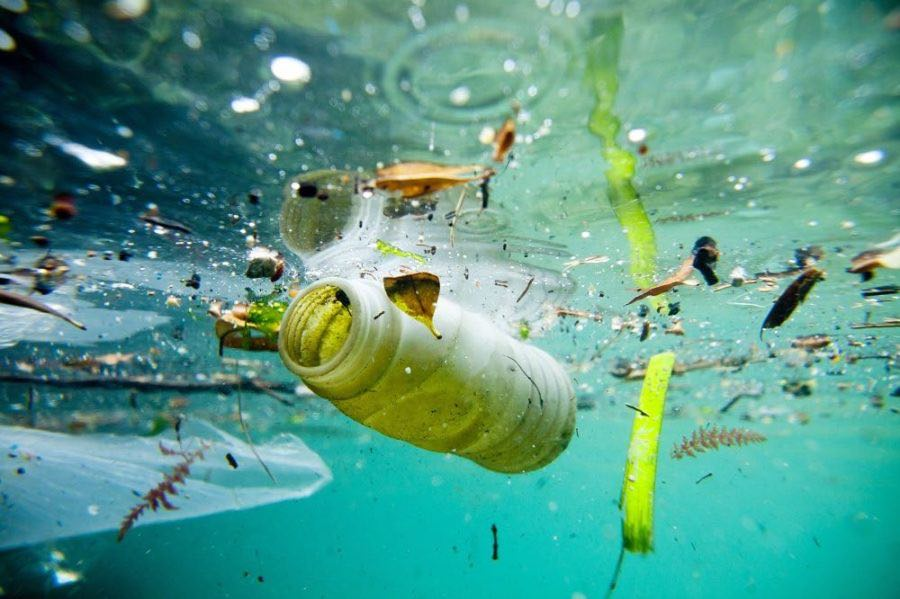
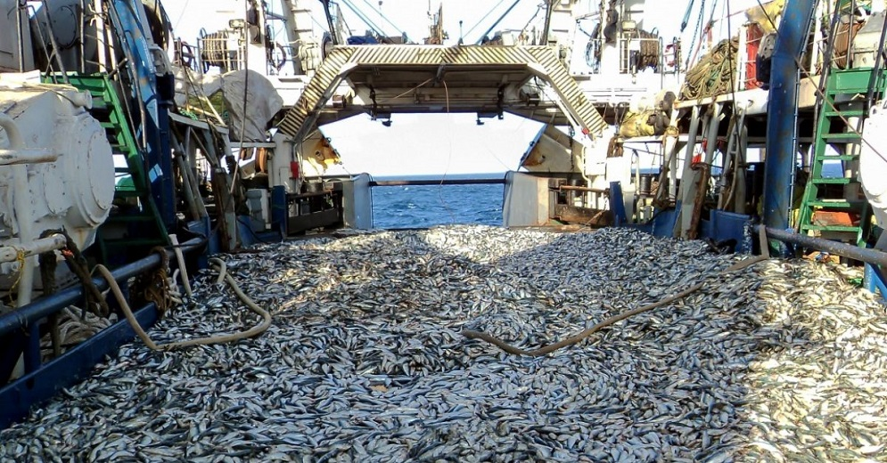

La vita marina comprende tutte le forme di vita che abitano gli oceani, i mari e altre grandi distese d'acqua salata. La biodiversità marina è immensa e include una vasta gamma di organismi, dai microscopici plancton ai giganteschi cetacei.
Le barriere coralline sono tra gli ecosistemi più ricchi di biodiversità del pianeta. Ospitano una moltitudine di specie marine, tra cui pesci, molluschi, e coralli stessi.
Le acque pelagiche costituiscono l'ambiente marino aperto e ospitano specie come i tonni, i delfini e gli squali. Questi habitat sono caratterizzati da grandi distese d'acqua lontane dalla costa.
I fondali marini includono diversi tipi di habitat, dalle pianure abissali alle montagne sottomarine. Questi ambienti ospitano organismi adattati a vivere in condizioni estreme di pressione e oscurità.
La conservazione della vita marina è essenziale per mantenere l'equilibrio degli ecosistemi oceanici. Le attività umane, come la pesca eccessiva, l'inquinamento e il cambiamento climatico, minacciano la salute degli oceani e delle specie che vi abitano. È fondamentale promuovere pratiche sostenibili e proteggere le aree marine per garantire un futuro sano per i nostri oceani.
Nonostante la bellezza e la diversità della vita marina, questa è minacciata da vari problemi ambientali che richiedono attenzione urgente.
L'inquinamento da plastica, prodotti chimici e rifiuti industriali ha effetti devastanti sugli ecosistemi marini. Molti organismi marini ingeriscono rifiuti plastici, scambiandoli per cibo, il che può essere letale.
La pesca eccessiva riduce le popolazioni ittiche a livelli insostenibili, mettendo a rischio interi ecosistemi marini. La cattura accidentale di specie non bersaglio, nota come bycatch, contribuisce ulteriormente al declino della biodiversità marina.
Le attività umane, come l'urbanizzazione costiera e la costruzione di infrastrutture, distruggono habitat cruciali per la vita marina. La perdita di mangrovie, praterie di posidonia e barriere coralline ha un impatto significativo sulla biodiversità marina.